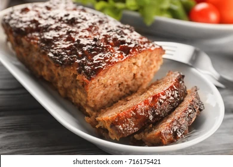

Classic Meatloaf

Description
Meatloaf is a comforting and satisfying dish made from a mixture of ground meats, breadcrumbs, eggs, and flavorful seasonings. It's a classic family favorite that is both easy to prepare and delicious to eat.
The meatloaf's moist and tender texture, combined with its rich and savory flavors, makes it a hearty and satisfying meal that everyone can enjoy.
The aroma of the meatloaf as it bakes in the oven, with the savory combination of herbs and spices, creates an enticing smell that fills the kitchen and heightens your anticipation for dinner.
Ingredients
- 1 and 1/2 pounds ground beef
- 1/2 pound ground pork
- 1 onion, finely chopped
- 2 cloves garlic, minced
- 1/2 cup breadcrumbs
- 1/4 cup milk
- 2 tablespoons ketchup
- 1 tablespoon Worcestershire sauce
- 1 teaspoon salt
- 1/2 teaspoon black pepper
- 2 eggs, lightly beaten
Steps
- Preheat the oven to 375 degrees F.
- In a large bowl, combine the ground beef, ground pork, onion, garlic, breadcrumbs, milk, ketchup, Worcestershire sauce, salt, pepper, and eggs. Mix well using your hands or a spoon.
- Shape the meat mixture into a loaf shape and place it in a greased baking dish.
- Bake the meatloaf in the preheated oven for approximately 1 hour, or until the internal temperature reaches 160 degrees F.
- Remove the meatloaf from the oven and let it rest for a few minutes before slicing and serving.
- Optional: You can top the meatloaf with additional ketchup or a glaze of your choice during the last 15 minutes of baking for added flavor.